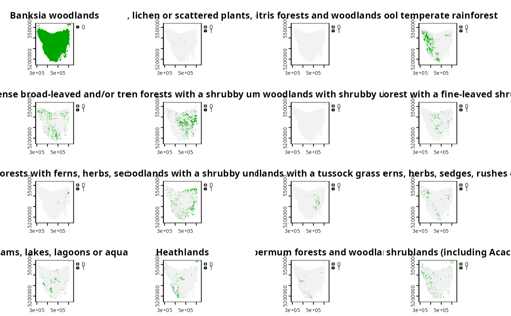

This data set was obtained from the "Introduction to Marxan" course and was originally part of a larger spatial prioritization performed under contract to Australia's Department of Environment and Water Resources (Klein et al. 2007). For a worked example with this dataset, refer to the Tasmania vignette in the prioritizr package.
data(tas_features) data(tas_pu)
Format
raster::RasterStack object
sp::SpatialPolygonsDataFrame() object.
Details
The data set contains the following items:
tas_puPlanning unit data. The attribute table has three columns containing unique identifiers ("id"), unimproved land values ("cost"), and their existing level of protection ("status"). Units with 50 \ are associated with a status of 2, otherwise they are associated with a value of 0.
tas_featuresThe distribution of 62 vegetation classes in Tasmania, Australia. Each layer in the stack represents a different vegetation class. For a given layer, cells indicate the presence (value of 1) or absence (value of 0) of the vegetation class in an area.
References
Klein C, Carwardine J, Wilson K, Watts M, and Possingham H (2007) Spatial Prioritization Approaches for the Conservation of Biodiversity in Australia: Considering Conservation Costs, Ecological & Evolutionary Processes, and Large-Intact Areas. Report to the Department of Environment; Water Resources.
Examples
plot(tas_features)